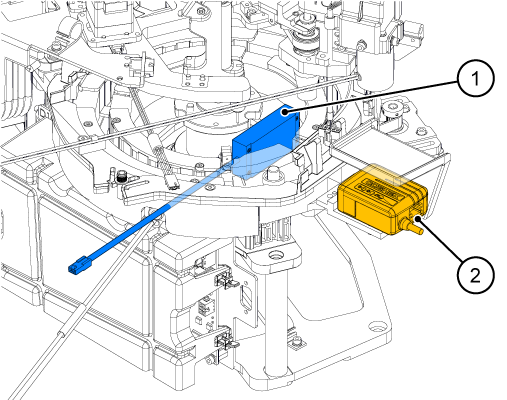
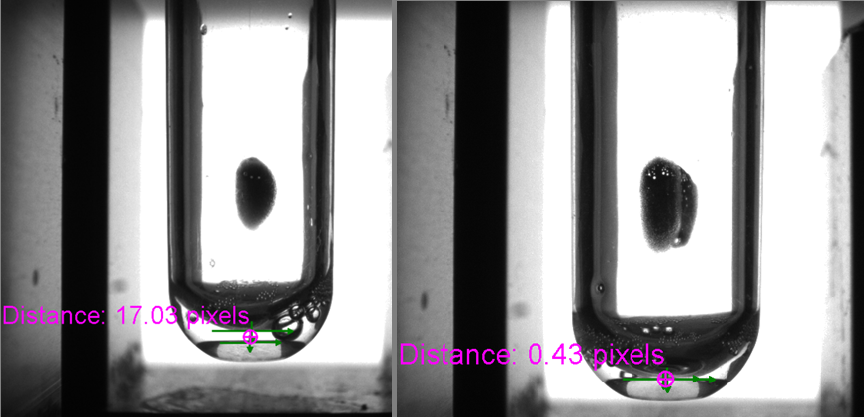
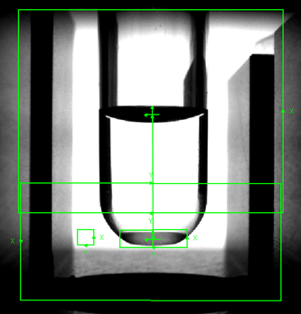

Wash Wheel Camera Operations
This topic includes information about how the wash wheel camera operates.
| Table of Contents |
|---|
| Overview |
| Final Residual Volume |
| Substrate Dispense Volume |
| Large Bubble Detection |
Overview
The wash wheel camera faces in toward the center of the wheel. A red backlight faces the camera to light reaction vessels (RVs) from behind. The camera captures two images of each individual RV. The first image captures the final residual volume inside the RV. After the substrate pump dispenses 200uL of substrate into the vessel, the second image captures the substrate dispense volume inside the RV before the system begins spin mixing.

| 1 | Backlight |
| 2 | Camera |
Final Residual Volume
The wash wheel camera uses a pattern-matching volume detection algorithm that finds the bottom of the RV and the meniscus of the fluid inside the RV and connects the center points of the two patterns to measure the pixel distance between them. In the event an RV is slanted, the algorithm corrects to ensure the distance measured is between two points aligned with RV side walls. The system then uses a calibration curve to convert pixel distance to a measurement of volume.

Substrate Dispense Volume
The wash wheel camera uses a pattern-matching volume detection algorithm that finds the bottom of the RV and the meniscus of the fluid inside the RV and connects the center points of the two patterns to measure the pixel distance between them. In the event an RV is slanted, the algorithm corrects to ensure the distance measured is between two points aligned with RV side walls. The system then uses a calibration curve to convert pixel distance to a measurement of volume.

Large Bubble Detection
The pattern-matching volume detection algorithm includes logic to mitigate for the presence of any large bubbles that might artificially increase the height of the meniscus. If the algorithm determines the substrate dispense volume is below a threshold, the algorithm will attempt a second time to find the meniscus of the fluid.
| Pattern Maximum (height) out of range? | FindLine (bottom) out of range? | Result | Comment |
|---|---|---|---|
| Yes | Yes | wash wheel substrate (WWS) | low volume, real failure |
| Yes | No | No WWS | bubble image |
| No | Yes | No WWS | rare |
| No | No | No WWS | clean image |